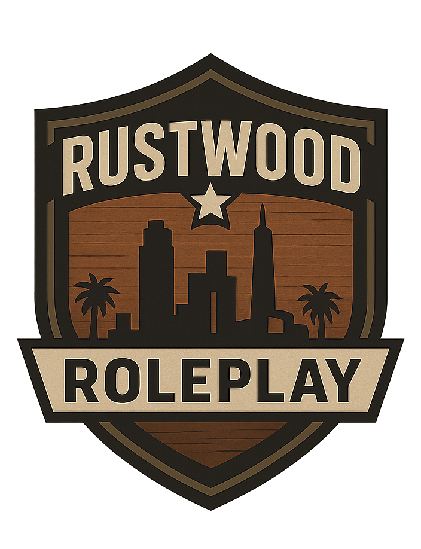

<!DOCTYPE html>
<html>
  <head>
    <title>JursMap</title>
    <meta charset="utf-8">
    <meta name="viewport" content="initial-scale=1.0, user-scalable=no">
    <link rel="stylesheet" href="https://cdnjs.cloudflare.com/ajax/libs/leaflet/1.7.1/leaflet.css">
    <script src="https://cdnjs.cloudflare.com/ajax/libs/leaflet/1.7.1/leaflet.js"></script>
    <style>
      html, body, #map { width:100%; height:100%; margin:0; padding:0; background: #000; }

      /* --- PALETO BAY POPUP STYLE --- */
      .jurisdiction-popup .leaflet-popup-content-wrapper {
        background: rgba(20, 20, 20, 0.85);
        color: #ffffff;
        border: 2px solid #2784F5;
        border-radius: 5px;
        box-shadow: 0 0 10px rgba(39, 132, 245, 0.5);
      }
      .jurisdiction-popup .leaflet-popup-tip {
        background: #141414;
      }
      .leaflet-popup-pane {
        filter: drop-shadow(0 0 0 rgba(0,0,0,0));
      }

      /* --- GRAPESEED POPUP STYLE --- */
      .grapeseed-popup .leaflet-popup-content-wrapper {
        background: rgba(20, 20, 20, 0.85);
        color: #ffffff;
        border: 2px solid #2ecc71; /* Green border */
        border-radius: 5px;
        box-shadow: 0 0 10px rgba(46, 204, 113, 0.5); /* Green glow */
      }
      .grapeseed-popup .leaflet-popup-tip {
        background: #141414;
      }
      
      /* --- SANDY SHORES POPUP STYLE --- */
      .sandy-shores-popup .leaflet-popup-content-wrapper {
        background: rgba(20, 20, 20, 0.85);
        color: #ffffff;
        border: 2px solid #C2B280; /* Sandy-brown border */
        border-radius: 5px;
        box-shadow: 0 0 10px rgba(194, 178, 128, 0.5); /* Sandy-brown glow */
      }
      .sandy-shores-popup .leaflet-popup-tip {
        background: #141414;
      }
    </style>
  </head>
  <body>
    <div id="map"></div>

    <script type="text/javascript">
      var map = L.map('map', { crs: L.CRS.Simple, minZoom: -2 });
      var imageUrl = '8qfr3xqfbw671.jpg';
      var img = new Image();
      img.src = imageUrl;

      img.onload = function() {
        var height = this.naturalHeight;
        var width = this.naturalWidth;
        var bounds = [[0, 0], [height, width]];
        var image = L.imageOverlay(imageUrl, bounds).addTo(map);
        map.fitBounds(bounds);

        // --- PALETO BAY ZONE (EXISTING) ---
        var paletoBayOriginalPoints = [
            [1067, 3625], [1088, 3557], [1104, 3457], [1120, 3352], [1104, 3205], [1073, 3084], [1041, 2984], [1004, 2900], [894, 2827], [826, 2758], [779, 2701], [684, 2627], [794, 2601], [878, 2569], [936, 2548], [962, 2533], [1073, 2433], [1183, 2312], [1256, 2186], [1314, 2155], [1393, 2155], [1482, 2097], [1487, 2044], [1414, 2013], [1330, 1913], [1472, 1955], [1535, 1987], [1603, 1992], [1682, 1976], [1750, 1981], [1808, 2008], [1834, 2034], [1876, 2065], [1923, 2107], [1997, 2165], [2039, 2223], [1907, 2302], [1802, 2296], [1718, 2302], [1598, 2323], [1550, 2375], [1440, 2527], [1325, 2674], [1267, 2748], [1235, 2879], [1235, 2995], [1235, 3121], [1235, 3257], [1230, 3357], [1246, 3473], [1262, 3578], [1277, 3620], [1193, 3646], [1109, 3641]
        ];
        var paletoBayCorrectedPoints = paletoBayOriginalPoints.map(function(point) {
          return [height - point[0], point[1]];
        });
        var paletoBayZone = L.polygon(paletoBayCorrectedPoints, { color: 'white', fillColor: '#2784F5', fillOpacity: 0.6 }).addTo(map);
        paletoBayZone.bindPopup(`<div style="text-align: center;"><h3>Paleto Bay PD Jurisdiction</h3><p style="margin: 5px 0;">Primary patrol zone for the Paleto Bay Police Department.</p></div>`, { className: 'jurisdiction-popup' });
        paletoBayZone.on('mouseover', function (e) { this.openPopup(e.latlng); });
        paletoBayZone.on('mouseout', function (e) { this.closePopup(); });

        // --- GRAPESEED ZONE (NEW COORDINATES) ---
        var grapeseedRawPoints = `4292,2104,4213,2093,4155,2025,4087,2036,4008,2015,3924,2030,3856,2072,3798,2109,3746,2135,3704,2167,3672,2235,3667,2324,3672,2403,3635,2429,3567,2466,3494,2487,3425,2498,3362,2534,3383,2608,3441,2697,3509,2666,3572,2608,3630,2571,3656,2513,3719,2524,3772,2508,3840,2502,3908,2487,3971,2461,4024,2403,4050,2460,4176,2440,4150,2508,4166,2571,4139,2629,4145,2687,4150,2744,4218,2729,4260,2697,4286,2650,4328,2603,4381,2566,4454,2545,4544,2513,4575,2471,4560,2372,4517,2288,4444,2183,4391,2062`;
        var grapeseedOriginalPoints = grapeseedRawPoints.split(',').reduce(function(acc, val, i) { if (i % 2 === 0) { acc.push([0, parseInt(val)]); } else { acc[acc.length - 1][0] = parseInt(val); } return acc; }, []);
        var grapeseedCorrectedPoints = grapeseedOriginalPoints.map(function(point) {
          return [height - point[0], point[1]];
        });
        var grapeseedZone = L.polygon(grapeseedCorrectedPoints, { color: 'white', fillColor: '#543003', fillOpacity: 0.6 }).addTo(map);
        grapeseedZone.bindPopup(`<div style="text-align: center;"><h3>Grapeseed Jurisdiction</h3><p>BCSO Patrol Area</p></div>`, { className: 'grapeseed-popup' });
        grapeseedZone.on('mouseover', function (e) { this.openPopup(e.latlng); });
        grapeseedZone.on('mouseout', function (e) { this.closePopup(); });

        // --- SANDY SHORES ZONE (NEW COORDINATES) ---
        var sandyShoresRawPoints = `3131,3033,3231,3049,3310,3049,3378,3054,3457,3028,3499,2981,3530,2923,3567,2876,3661,2891,3730,2855,3803,2839,3882,2849,3945,2870,4013,2891,4087,2860,4123,2844,4144,2807,4134,2750,4197,2739,4229,2723,4271,2681,4334,2587,4402,2566,4444,2655,4470,2750,4496,2828,4496,2949,4475,3065,4402,3227,4349,3343,4307,3406,4239,3474,4160,3532,4082,3495,4034,3479,3987,3464,3951,3480,3525,3506,3315,3527`;
        var sandyShoresOriginalPoints = sandyShoresRawPoints.split(',').reduce(function(acc, val, i) { if (i % 2 === 0) { acc.push([0, parseInt(val)]); } else { acc[acc.length - 1][0] = parseInt(val); } return acc; }, []);
        var sandyShoresCorrectedPoints = sandyShoresOriginalPoints.map(function(point) {
          return [height - point[0], point[1]];
        });
        var sandyShoresZone = L.polygon(sandyShoresCorrectedPoints, { color: 'white', fillColor: '#3B3937', fillOpacity: 0.6 }).addTo(map);
        sandyShoresZone.bindPopup(`<div style="text-align: center;"><h3>Sandy Shores Jurisdiction</h3><p>BCSO Patrol Area</p></div>`, { className: 'sandy-shores-popup' });
        sandyShoresZone.on('mouseover', function (e) { this.openPopup(e.latlng); });
        sandyShoresZone.on('mouseout', function (e) { this.closePopup(); });
      };
    </script>
  </body>
</html>
